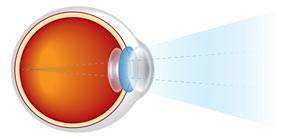

How the Eye Works
To understand how the human eye works, first imagine a photographic camera—since cameras were developed very much with the human eye in mind.

How do we see what we see?

Light reflects off of objects and enters the eyeball through a transparent layer of tissue at the front of the eye called the cornea. The cornea accepts widely divergent light rays and bends them through the pupil—the dark opening in the center of the colored portion of the eye.The pupil appears to expand or contract automatically based on the intensity of the light entering the eye. In truth, this action is controlled by the iris—a ring of muscles within the colored portion of the eye that adjusts the pupil opening based on the intensity of light. (So when a pupil appears to expand or contract, it is actually the iris doing its job.)
The adjusted light passes through the lens of the eye. Located behind the pupil, the lens automatically adjusts the path of the light and brings it into sharp focus onto the receiving area at back of the eye—the retina.
An amazing membrane full of photoreceptors (a.k.a. the “rods and cones”), the retina converts the light rays into electrical impulses. These then travel through the optic nerve at the back of the eye to the brain, where an image is finally perceived.
A delicate system, subject to flaws.
It’s easy to see that a slight alteration in any aspect of how the human eye works—the shape of the eyeball, the cornea’s health, lens shape and curvature, retina problems—can cause the eye to produce fuzzy or blurred vision. That is why many people need vision correction. Eyeglasses and contact lenses help the light focus images correctly on the retina and allow people to see clearly.
In effect, a lens is put in front of the eye to make up for any deficiencies in the complex vision process.
The main parts of the human eye include:
- Cornea: transparent tissue covering the front of the eye that lets light travel through
- Iris: a ring of muscles in the colored part of the eye that controls the size of the pupil
- Pupil: an opening in the center of the iris that changes size to control how much light is entering the eye.
- Sclera: the white part of the eye that is composed of fibrous tissue that protects the inner workings of the eye
- Lens: located directly behind the pupil, it focuses light rays onto the retina
- Retina: membrane at the back of the eye that changes light into nerve signals
- Rods and cones: special cells used by the retina to process light
- Fovea: a tiny spot in the center of the retina that contains only cone cells. It allows us to see things sharply.
- Optic Nerve: a bundle of nerve fibers that carries messages from the eyes to the brain
- Macula: a small and highly sensitive part of the retina responsible for central vision, which allows a person to see shapes, colors, and details clearly and sharply.
Special thanks to the EyeGlass Guide, for informational material that aided in the creation of this website. Visit the EyeGlass Guide today!
Ready to see clearly?
Book a comprehensive eye exam with Carey Brooks, OD in Frisco, TX.